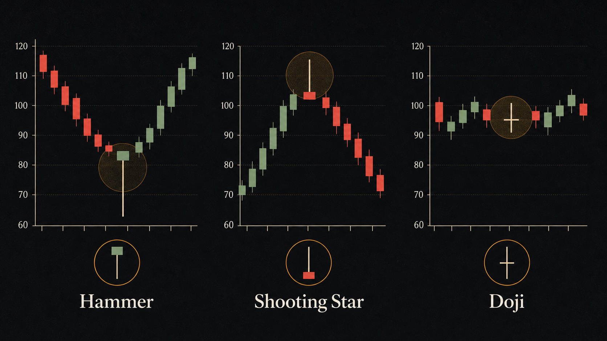
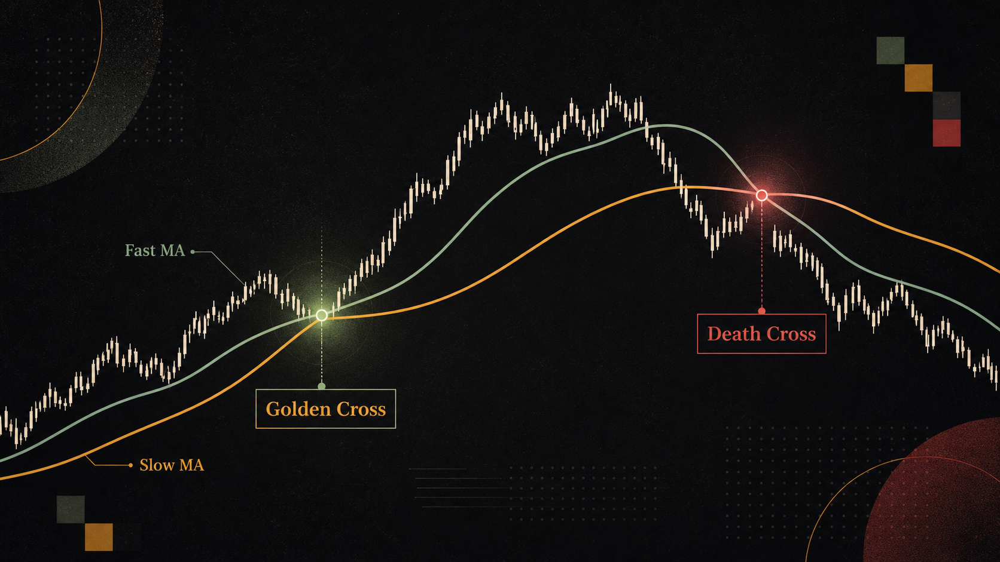
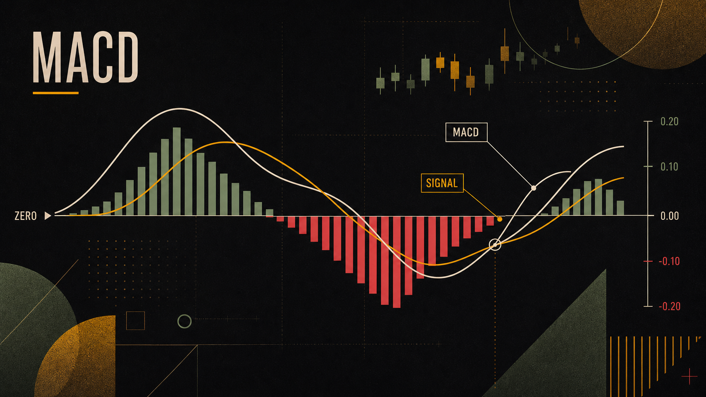
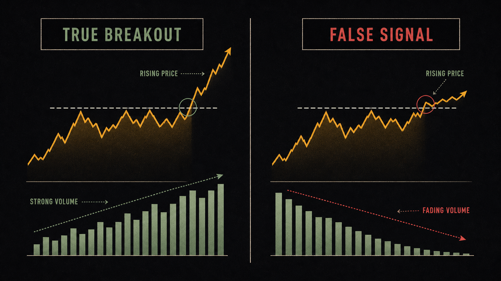

17世纪日本大阪，一个叫本间宗久的米商，用一套独创的图表方法追踪米价情绪，20年间积累了相当于今天10亿美元的财富。这套方法后来漂洋过海，成了全世界技术分析师共同的语言——蜡烛图。
K 线（蜡烛图）从哪里来——日本人发明的米价图
本间宗久生活在德川幕府时代（1700年代），那时候日本大阪的堂岛米市是全球最早的期货交易所雏形。每天，来自全国各地的米价信息汇集于此，价格随着供需、天气和政治局势起伏波动。
本间宗久的创见是：价格不光是数字，更是人心的映射。他记录每一个交易周期内的四个关键价格节点，并用一种形似蜡烛的图形来呈现它们之间的关系——这就是蜡烛图（Candlestick Chart）的起源。
大约两百年后，美国技术分析师史蒂夫·尼森（Steve Nison）在1980年代把这套方法引入西方市场，出版了《日本蜡烛图技术》。从此，K线从东京的米市走进了华尔街的交易终端。
今天，无论你打开纽交所、纳斯达克还是币安，所有的价格图表都在用这套三百年前的语言说话。学会读K线，就像学会了一门通用的价格方言。
图表是市场的X光片。它不能告诉你为什么，但它能告诉你什么正在发生。
— 改编自 John Murphy《技术分析》解读一根 K 线（开高低收 OHLC）
每一根K线，无论是日线、周线还是分钟线，都浓缩了该时间段内市场的完整博弈过程。它记录四个关键价格：
这四个数字构成了K线的两个可见部分：
实体（Body）：开盘价和收盘价之间的矩形区域。这是最重要的部分，反映了价格在该周期内净移动了多少：
- 绿色实体（阳线）：收盘价 > 开盘价，多方（买方）胜出。实体越长，涨势越强。
- 红色实体（阴线）：收盘价 < 开盘价，空方（卖方）胜出。实体越长，跌势越猛。
影线（Wick / Shadow）：实体上下伸出的细线。上影线 = 最高价与实体上端之间的距离，反映了价格曾经冲高但遭到抛压而回落；下影线 = 最低价与实体下端之间的距离，反映了价格曾经下探但获得支撑而反弹。
举个具体的例子：假设今天苹果（AAPL）：
- 开盘：$185.00
- 最高：$188.50（上影线 = 188.50 - 186.20 = $2.30）
- 最低：$183.40（下影线 = 185.00 - 183.40 = $1.60）
- 收盘：$186.20（绿色实体 = 186.20 - 185.00 = $1.20）
这根K线告诉我们：今天多方最终获胜（阳线），但曾经被打压到183.40的低点后强力反弹，而上方冲到188.50时遭遇抛压回落——一场拉锯战，但多方略占上风。
经典 K 线形态（锤子、吞没、十字星等）
几百年来，技术分析师归纳出了数十种经典的K线形态。这些形态背后都有市场心理逻辑——它们告诉你买卖双方的力量正在如何转换。下面介绍最常用的六种：
点击或悬停查看形态详情
1. 锤子线（Hammer）
小实体 + 极长下影线（至少是实体的2倍以上）+ 几乎没有上影线。出现在下跌趋势末端时，是经典的看涨反转信号。
背后逻辑：当天价格一度大幅下跌，但在低点遭到强力买盘承接，把价格拉回接近开盘位——买方展现了意志，卖方的力量正在衰竭。
2. 倒锤子线（Inverted Hammer）
小实体 + 极长上影线 + 几乎没有下影线。同样出现在下跌末端，预示可能反转。背后逻辑：买方尝试推高价格，虽然最终被打回，但说明买方力量开始出现，后续若有阳线确认，趋势可能逆转。
3. 看涨吞没（Bullish Engulfing）
两根K线组合：第一根是小阴线，第二根是大阳线，且大阳线的实体完全「吞没」了前一根阴线的实体。出现在下跌趋势末端，是强烈的反转信号——买方在一天内完全压制了前一天的卖方。
4. 看跌吞没（Bearish Engulfing）
与上面相反：小阳线之后跟着大阴线，大阴线实体吞没小阳线实体。出现在上涨趋势末端，是高位见顶信号。2021年11月拿许多科技股的日线图一看，顶部附近都能找到类似形态。
5. 十字星（Doji）
开盘价和收盘价几乎相同（实体极小或近乎为零），上下均有影线。十字星代表多空双方势均力敌、市场犹豫不决。单根十字星本身不是买入或卖出信号，但出现在强烈上涨或下跌之后，往往预示着方向转变。
6. 早晨之星（Morning Star）
经典的三根K线反转形态：①大阴线（趋势继续）→ ②小实体或十字星（犹豫，往往跳空低开）→ ③大阳线（买方接管，最好能收回第一根阴线实体的一半以上）。这是技术分析中最受信任的底部反转信号之一，出现在显著下跌之后。

均线系统（MA5、MA20、MA200 各代表什么）
移动平均线（Moving Average，MA）是把过去N天的收盘价加总取平均，然后把每天的平均值连起来形成的曲线。它的作用是平滑掉价格的随机噪音，显露出背后的趋势方向。
最常用的均线有四条，各有不同的「任务分工」：
| 均线 | 参数 | 代表含义 | 谁在用 |
|---|---|---|---|
| 5日均线（MA5） | 过去5个交易日均价 | 超短期动量，一周的「重心」 | 短线交易者，日内/摆动交易 |
| 20日均线（MA20） | 过去20个交易日均价 | 约一个月的趋势，常用作「动态支撑线」 | 中期趋势判断，布林带中轨 |
| 50日均线（MA50） | 过去50个交易日均价 | 中期趋势，两个半月的「均衡价格」 | 机构、基金经理 |
| 200日均线（MA200） | 过去200个交易日均价 | 长期牛熊分界线，最受华尔街关注 | 长线投资者、技术面基本面结合者 |
均线最实用的两个用法：
一、趋势判断：股价在MA200上方 = 长期上涨趋势（牛市结构）；股价在MA200下方 = 长期下跌趋势（熊市结构）。机构投资者经常用「是否在200日线上方」作为是否持有的粗略标准。
二、金叉与死叉：
均线还有一个妙用：动态支撑和阻力。当股价从上方回调到MA20附近时，往往会获得支撑（因为很多人把这条线当作加仓机会）；当股价从下方反弹到MA200附近时，往往遭遇阻力（因为很多被套的人等着解套卖出）。

MACD：动量的语言
MACD（Moving Average Convergence Divergence，移动平均收敛散度）是技术分析里最广为人知的动量指标之一。它的发明者杰拉德·阿佩尔（Gerald Appel）在1970年代创造了这个工具，目的是把均线的趋势信息和价格动量结合起来。
MACD由三个部分构成：
MACD 金叉：MACD线从下方穿越信号线向上 = 短期动量增强，常被视为买入机会（尤其当发生在零线以下由负转正时，信号更强）。
MACD 死叉：MACD线从上方穿越信号线向下 = 短期动量减弱，常被视为减仓/卖出信号。
MACD最有价值的用法之一是背离（Divergence）：

成交量：量才是价的证人
有一句技术分析界的老话：「价格是说谎者，成交量是法官。」价格的移动可以被少数大资金短暂操控，但成交量很难造假——它代表了有多少真实的资金在参与这场博弈。
量价关系的四个基本原则：
量价背离（Price-Volume Divergence）是最需要警惕的信号：股价不断创新高，但每次新高的成交量却越来越少。这意味着参与者越来越少，虽然价格还在涨，但「用脚投票」的人已经在悄悄离场了。
一个真实案例：2021年ARK Innovation ETF（ARKK）在价格从$60冲向$150的过程中，到了$120以上，成交量开始持续萎缩，而价格依然创新高——这就是典型的顶部量价背离。随后ARKK从$160高点跌回$35，跌幅超过−78%。
成交量就像汽油——没有它，价格这辆车跑不远。
— 华尔街技术分析谚语OBV（On-Balance Volume，能量潮）：是一个把成交量累积的指标。上涨日加上当天成交量，下跌日减去当天成交量。OBV持续上升而价格还在低位，往往是机构悄悄建仓的信号（因为机构买入会推高成交量，但为了不推高价格，他们会分批小量买入）。
- K线起源于17世纪日本米市，每根蜡烛记录开（O）、高（H）、低（L）、收（C）四个价格，实体代表净方向，影线代表极端试探。
- 经典形态需看「位置」：锤子线在下跌末端是看涨信号；同样的形态出现在上涨中途意义截然不同。任何形态都需要等待下一根K线确认。
- 均线的核心价值：MA200是长期牛熊分界；金叉（短线穿越长线向上）看涨，死叉相反；均线是滞后指标，震荡市中容易失效。
- MACD = EMA(12) − EMA(26)，信号线 = EMA(9)。最有价值的用法是「背离」：价格创新高但MACD未创新高（顶背离），或价格创新低但MACD未创新低（底背离）。
- 成交量是验证价格的「法官」：放量上涨健康，缩量上涨危险。上升趋势中成交量持续萎缩是量价背离的警告信号。
- 技术分析是概率工具，不是水晶球。任何单一信号都有失败的可能，专业做法是多维度交叉验证，并严格执行止损。
| 中文 | 英文 | 一句话解释 |
|---|---|---|
| K线 / 蜡烛图 | Candlestick Chart | 用「蜡烛」形状展示开高低收四价的图表 |
| 实体 | Body | K线中开盘价到收盘价之间的矩形区域 |
| 影线 | Wick / Shadow | K线实体上下伸出的细线，代表当日价格极端值 |
| 金叉 | Golden Cross | 短期均线从下方穿越长期均线向上，看涨信号 |
| 死叉 | Death Cross | 短期均线从上方穿越长期均线向下，看跌信号 |
| 均线 | Moving Average (MA) | 过去N日收盘价的平均值连成的曲线 |
| MACD | MACD | EMA(12)与EMA(26)之差，衡量价格动量 |
| 背离 | Divergence | 价格方向与指标方向不一致，预示趋势转变 |
| 量价背离 | Price-Volume Divergence | 价格创新高但成交量萎缩，是趋势衰竭的信号 |
| 吞没形态 | Engulfing Pattern | 第二根K线实体完全覆盖第一根实体的两根K线形态 |
| 十字星 | Doji | 开收盘价几乎相同的K线，代表多空均势与犹豫 |

一根K线的「实体」（Body）代表什么？
锤子线（Hammer）出现在下跌末端，通常预示着什么？
MACD 金叉（快线上穿信号线）通常意味着什么？
「量价背离」通常指的是哪种情况？